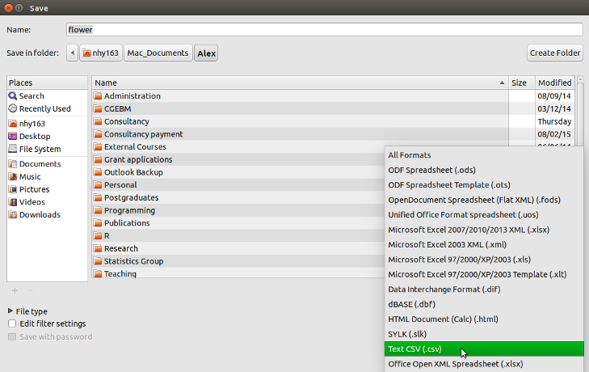

3.3 Importing data
Although creating data frames from existing data structures is extremely useful, by far the most common approach is to create a data frame by importing data from an external file. To do this, you’ll need to have your data correctly formatted and saved in a file format that R is able to recognise. Fortunately for us, R is able to recognise a wide variety of file formats, although in reality you’ll probably end up only using two or three regularly.
Take a look at this video for a quick introduction to importing data in R
3.3.1 Saving files to import
The easiest method of creating a data file to import into R is to enter your data into a spreadsheet using either Microsoft Excel or LibreOffice Calc and save the spreadsheet as a tab delimited file. We prefer LibreOffice Calc as it’s open source, platform independent and free but MS Excel is OK too (but see here for some gotchas). Here’s the data from the petunia experiment we dicussed previously displayed in LibreOffice. If you want to follow along you can download the data file (‘flower.xls’) from the companion website here.

For those of you unfamiliar with the tab delimited file format it simply means that data in different columns are separated with a ‘tab’ character (yes, the same one as on your keyboard) and is usually saved as a file with a ‘.txt’ extension (you might also see .tsv which is short for tab separated values).
To save a spreadsheet as a tab delimited file in LibreOffice Calc select File -> Save as ... from the main menu. You will need to specify the location you want to save your file in the ‘Save in folder’ option and the name of the file in the ‘Name’ option. In the drop down menu located above the ‘Save’ button change the default ‘All formats’ to ‘Text CSV (.csv)’.

Click the Save button and then select the ‘Use Text CSV Format’ option. In the next pop-up window select {Tab} from the drop down menu in the ‘Field delimiter’ option. Click on OK to save the file.

The resulting file will annoyingly have a ‘.csv’ extension even though we’ve saved it as a tab delimited file. Either live with it or rename the file with a ‘.txt’ extension instead.
In MS Excel, select File -> Save as ... from the main menu and navigate to the folder where you want to save the file. Enter the file name (keep it fairly short, no spaces!) in the ‘Save as:’ dialogue box. In the ‘File format:’ dialogue box click on the down arrow to open the drop down menu and select ‘Text (Tab delimited)’ as your file type. Select OK to save the file.

There are a couple of things to bear in mind when saving files to import into R which will make your life easier in the long run. Keep your column headings (if you have them) short and informative. Also avoid spaces in your column headings by replacing them with an underscore or a dot (i.e. replace shoot height with shoot_height or shoot.height) and avoid using special characters (i.e. leaf area (mm^2)). Remember, if you have missing data in your data frame (empty cells) you should use an NA to represent these missing values. This will keep the data frame tidy.
3.3.2 Import functions
Once you’ve saved your data file in a suitable format we can now read this file into R. The workhorse function for importing data into R is the read.table() function (we discuss some alternatives later in the chapter). The read.table() function is a very flexible function with a shed load of arguments (see ?read.table) but it’s quite simple to use. Let’s import a tab delimited file called flower.txt which contains the data we saw previously in this Chapter and assign it to an object called flowers. The file is located in a data directory which itself is located in our root directory. The first row of the data contains the variable (column) names. To use the read.table() function to import this file
flowers <- read.table(file = 'data/flower.txt', header = TRUE, sep = "\t",
stringsAsFactors = TRUE)There are a few things to note about the above command. First, the file path and the filename (including the file extension) needs to be enclosed in either single or double quotes (i.e. data/flower.txt bit) as the read.table() function expects this to be a character string. If your working directory is already set to the directory which contains the file, you don’t need to include the entire file path just the filename. In the example above, the file path is separated with a single forward slash /. This will work regardless of the operating system you are using and we recommend you stick with this. However, Windows users may be more familiar with the single backslash notation and if you want to keep using this you will need to include them as double backslashes. Note though that the double backslash notation will not work on computers using Mac OSX or Linux operating systems.
flowers <- read.table(file = 'C:\\Documents\\Prog1\\data\\flower.txt',
header = TRUE, sep = "\t", stringsAsFactors = TRUE)The header = TRUE argument specifies that the first row of your data contains the variable names (i.e. nitrogen, block etc). If this is not the case you can specify header = FALSE (actually, this is the default value so you can omit this argument entirely). The sep = "\t" argument tells R that the file delimiter is a tab (\t).
After importing our data into R it doesn’t appear that R has done much, at least nothing appears in the R Console! To see the contents of the data frame we could just type the name of the object as we have done previously. BUT before you do that, think about why you’re doing this. If your data frame is anything other than tiny, all you’re going to do is fill up your Console with data. It’s not like you can easily check whether there are any errors or that your data has been imported correctly. A much better solution is to use our old friend the str() function to return a compact and informative summary of your data frame.
str(flowers)
## 'data.frame': 96 obs. of 8 variables:
## $ treat : Factor w/ 2 levels "notip","tip": 2 2 2 2 2 2 2 2 2 2 ...
## $ nitrogen : Factor w/ 3 levels "high","low","medium": 3 3 3 3 3 3 3 3 3 3 ...
## $ block : int 1 1 1 1 1 1 1 1 2 2 ...
## $ height : num 7.5 10.7 11.2 10.4 10.4 9.8 6.9 9.4 10.4 12.3 ...
## $ weight : num 7.62 12.14 12.76 8.78 13.58 ...
## $ leafarea : num 11.7 14.1 7.1 11.9 14.5 12.2 13.2 14 10.5 16.1 ...
## $ shootarea: num 31.9 46 66.7 20.3 26.9 72.7 43.1 28.5 57.8 36.9 ...
## $ flowers : int 1 10 10 1 4 9 7 6 5 8 ...Here we see that flowers is a ‘data.frame’ object which contains 96 rows and 8 variables (columns). Each of the variables are listed along with their data class and the first 10 values. As we mentioned previously in this Chapter, it can be quite convenient to copy and paste this into your R script as a comment block for later reference.
Notice also that your character string variables (treat and nitrogen) have been imported as factors because we used the argument stringsAsFactors = TRUE. If this is not what you want you can prevent this by using the stringsAsFactors = FALSE or from R version 4.0.0 you can just leave out this argument as stringsAsFactors = FALSE is the default.
flowers <- read.table(file = 'data/flower.txt', header = TRUE,
sep = "\t", stringsAsFactors = FALSE)
str(flowers)
## 'data.frame': 96 obs. of 8 variables:
## $ treat : chr "tip" "tip" "tip" "tip" ...
## $ nitrogen : chr "medium" "medium" "medium" "medium" ...
## $ block : int 1 1 1 1 1 1 1 1 2 2 ...
## $ height : num 7.5 10.7 11.2 10.4 10.4 9.8 6.9 9.4 10.4 12.3 ...
## $ weight : num 7.62 12.14 12.76 8.78 13.58 ...
## $ leafarea : num 11.7 14.1 7.1 11.9 14.5 12.2 13.2 14 10.5 16.1 ...
## $ shootarea: num 31.9 46 66.7 20.3 26.9 72.7 43.1 28.5 57.8 36.9 ...
## $ flowers : int 1 10 10 1 4 9 7 6 5 8 ...Other useful arguments include dec = and na.strings =. The dec = argument allows you to change the default character (.) used for a decimal point. This is useful if you’re in a country where decimal places are usually represented by a comma (i.e. dec = ","). The na.strings = argument allows you to import data where missing values are represented with a symbol other than NA. This can be quite common if you are importing data from other statistical software such as Minitab which represents missing values as a * (na.strings = "*").
If we just wanted to see the names of our variables (columns) in the data frame we can use the names() function which will return a character vector of the variable names.
names(flowers)
## [1] "treat" "nitrogen" "block" "height" "weight" "leafarea"
## [7] "shootarea" "flowers"R has a number of variants of the read.table() function that you can use to import a variety of file formats. Actually, these variants just use the read.table() function but include different combinations of arguments by default to help import different file types. The most useful of these are the read.csv(), read.csv2() and read.delim() functions. The read.csv() function is used to import comma separated value (.csv) files and assumes that the data in columns are separated by a comma (it sets sep = "," by default). It also assumes that the first row of the data contains the variable names by default (it sets header = TRUE by default). The read.csv2() function assumes data are separated by semicolons and that a comma is used instead of a decimal point (as in many European countries). The read.delim() function is used to import tab delimited data and also assumes that the first row of the data contains the variable names by default.
# import .csv file
flowers <- read.csv(file = 'data/flower.csv')
# import .csv file with dec = "," and sep = ";"
flowers <- read.csv2(file = 'data/flower.csv')
# import tab delim file with sep = "\t"
flowers <- read.delim(file = 'data/flower.txt') You can even import spreadsheet files from MS Excel or other statistics software directly into R but our advice is that this should generally be avoided if possible as it just adds a layer of uncertainty between you and your data. In our opinion it’s almost always better to export your spreadsheets as tab or comma delimited files and then import them into R using the read.table() function. If you’re hell bent on directly importing data from other software you will need to install the foreign package which has functions for importing Minitab, SPSS, Stata and SAS files or the xlsx package to import Excel spreadsheets.
3.3.3 Common import frustrations
It’s quite common to get a bunch of really frustrating error messages when you first start importing data into R. Perhaps the most common is
Error in file(file, "rt") : cannot open the connection
In addition: Warning message:
In file(file, "rt") :
cannot open file 'flower.txt': No such file or directoryThis error message is telling you that R cannot find the file you are trying to import. It usually rears its head for one of a couple of reasons (or all of them!). The first is that you’ve made a mistake in the spelling of either the filename or file path. Another common mistake is that you have forgotten to include the file extension in the filename (i.e. .txt). Lastly, the file is not where you say it is or you’ve used an incorrect file path. Using RStudio Projects and having a logical directory structure goes along way to avoiding these types of errors.
Another really common mistake is to forget to include the header = TRUE argument when the first row of the data contains variable names. For example, if we omit this argument when we import our flowers.txt file everything looks OK at first (no error message at least)
flowers_bad <- read.table(file = 'data/flower.txt', sep = "\t")but when we take a look at our data frame using str()
str(flowers_bad)
## 'data.frame': 97 obs. of 8 variables:
## $ V1: chr "treat" "tip" "tip" "tip" ...
## $ V2: chr "nitrogen" "medium" "medium" "medium" ...
## $ V3: chr "block" "1" "1" "1" ...
## $ V4: chr "height" "7.5" "10.7" "11.2" ...
## $ V5: chr "weight" "7.62" "12.14" "12.76" ...
## $ V6: chr "leafarea" "11.7" "14.1" "7.1" ...
## $ V7: chr "shootarea" "31.9" "46" "66.7" ...
## $ V8: chr "flowers" "1" "10" "10" ...We can see an obvious problem, all of our variables have been imported as factors and are variables are named V1, V2, V3 … V8. The problem happens because we haven’t told the read.table() function that the first row contains the variable names and so it treats them as data. As soon as we have a single character string in any of our data vectors R treats the vectors as character type data (remember all elements in a vector must contain the same type of data). But why are they factors rather than character strings? Well, this is because when we use the read.table() function any variable containing character strings is converted to a factor by default (unless we use the stringsAsFactors = argument as above).
3.3.4 Other import options
There are numerous other functions to import data from a variety of sources and formats. Most of these functions are contained in packages that you will need to install before using them. We list a couple of the more useful packages and functions below.
The fread() function from the read.table package is great for importing large data files quickly and efficiently (much faster than the read.table() function). One of the great things about the fread() function is that it will automatically detect many of the arguments you would normally need to specify (like sep = etc). One of the things you will need to consider though is that the fread() function will return a data.table object not a data.frame as would be the case with the read.table() function. This is usually not a problem as you can pass a data.table object to any function that only accepts data.frame objects. To learn more about the differences between data.table and data.frame objects see here.
library(read.table)
all_data <- fread(file = 'data/flower.txt')Various functions from the readr package are also very efficient at reading in large data files. The readr package is part of the ‘tidyverse’ collection of packages and provides many equivalent functions to base R for importing data. The readr functions are used in a similar way to the read.table() or read.csv() functions and many of the arguments are the same (see ?readr::read_table for more details). There are however some differences. For example, when using the read_table() function the header = TRUE argument is replaced by col_names = TRUE. Also, character class variables are not automatically converted to factors when using read_table() and the function returns a ‘tibble’ class object which is the tidyverse equivalent of a ‘data.frame’ object (see here for differences).
library(readr)
# import white space delimited files
all_data <- read_table(file = 'data/flower.txt', col_names = TRUE)
# import comma delimited files
all_data <- read_csv(file = 'data/flower.txt')
# import tab delimited files
all_data <- read_delim(file = 'data/flower.txt', delim = "\t")
# or use
all_data <- read_tsv(file = 'data/flower.txt')If your data file is ginormous, then the ff and bigmemory packages may be useful as they both contain import functions that are able to store large data in a memory efficient manner. You can find out more about these functions here and here.